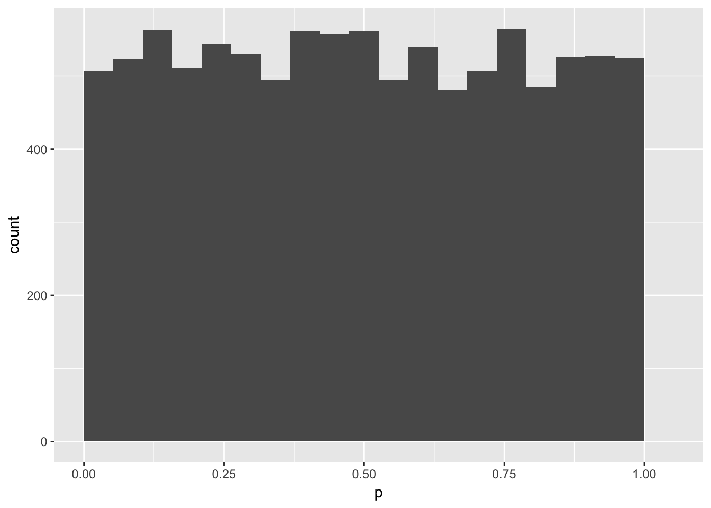
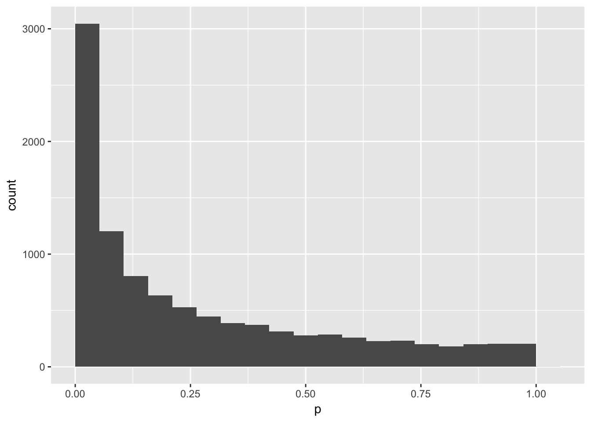
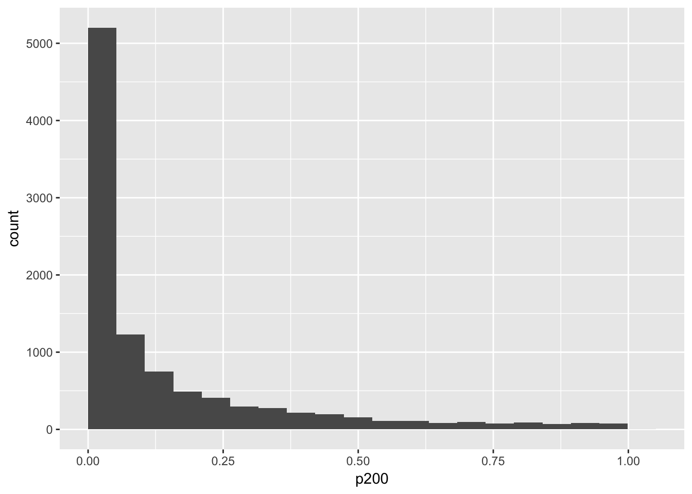
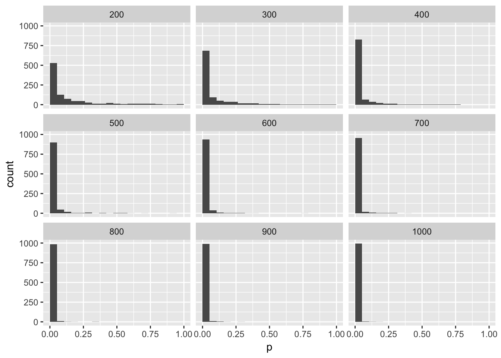

First, let’s make a data frame with two variables, a and b that are both sampled from a normal distribution with a mean of 0 and SD of 1. The variablle n will be how many samples we’ll take (100). Then we can run a t-test to see if they are different.
library(tidyverse)n = 100
data <- data.frame(
a = rnorm(n, 0, 1),
b = rnorm(n, 0, 1)
)
t <- t.test(data$a,data$b)
t$p.value## [1] 0.05207093Now let’s repeat that procedure 1000 times. The easiest way to do that is to make a function that returns the information you want.
tPower <- function() {
n = 100
data <- data.frame(
a = rnorm(n, 0, 1),
b = rnorm(n, 0, 1)
)
t <- t.test(data$a,data$b)
return(t$p.value)
}
tPower()## [1] 0.7248193mySample <- data.frame(
p = replicate(10000, tPower())
)
mySample %>%
ggplot(aes(p)) +
geom_histogram(bins = 20, boundary = 0)
mean(mySample$p < .05)## [1] 0.0477What if you induced a small effect of 0.2 SD?
tPower2 <- function() {
n = 100
data <- data.frame(
a = rnorm(n, 0, 1),
b = rnorm(n, 0.2, 1)
)
t <- t.test(data$a,data$b)
return(t$p.value)
}
tPower2()## [1] 0.771214mySample2 <- data.frame(
p = replicate(10000, tPower2())
)
mySample2 %>%
ggplot(aes(p)) +
geom_histogram(bins = 20, boundary = 0)
mean(mySample2$p < .05)## [1] 0.2906Hmm, you only get a p-value less than .05 30% of the time. That means that your study would only have 30% power to detect an effect this big with 100 subjects. Let’s make a new function to give you the p-value of a study with any number of subjects (you put the N inside the parentheses of the function).
tPowerN <- function(n) {
data <- data.frame(
a = rnorm(n, 0, 1),
b = rnorm(n, 0.2, 1)
)
t <- t.test(data$a,data$b)
return(t$p.value)
}
tPowerN(200)## [1] 0.964605mySampleN <- data.frame(
p200 = replicate(10000, tPowerN(200))
)
mySampleN %>%
ggplot(aes(p200)) +
geom_histogram(bins = 20, boundary = 0)
mean(mySampleN$p200 < .05)## [1] 0.517nlist <- seq(200, 1000, by = 100)
remove(mySampleN)
for (n in nlist) {
temp <- data.frame(
n = n,
p = replicate(1000, tPowerN(n))
)
if (exists("mySampleN")) {
mySampleN <- rbind(mySampleN, temp)
} else {
mySampleN <- temp
}
remove(temp)
print(n)
}## [1] 200
## [1] 300
## [1] 400
## [1] 500
## [1] 600
## [1] 700
## [1] 800
## [1] 900
## [1] 1000mySampleN %>%
ggplot(aes(p)) +
geom_histogram(bins = 20, boundary = 0) +
facet_wrap(~n, nrow = 3)